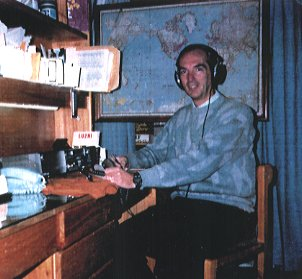

Hawaiian Is
【Back Issues Mar.99】
31.Mar.99
(14:00-c) ZL-TV 03:00- 45.24/25/26 - VK-TV 03:00- 46.172 -- VK4BLK 03:13 50.110 SSB (A35RK 03:18 50.110/115 CW JA3.4.5.6.9) 9M-TV 03:30- 48.240/260 -- BY-TV 03-30- 49.750 -- YC1MH 08:00 50.110/120 SSB VK2QF 08:30 50.110 CW/SSB VK4ABW 09:54 50.110 SSB VK4JH 10:01 50.110 CW 9M2/JI1ETU 14:44 50.085 CW ◎ 今日は早々とコンデションは西方面に移り、午後は48/49MHz帯のTVが強力に入感していた。 49MHz帯のバズが50MHz帯まで入り込んで50.110MHz付近は"うるさかった"が、それを避ける？様 にYC1MHが50.120MHzでJAのパイルを捌いていた。 ◎ QRTが29日とも、30日とも言われていたT33RDだが、今日現在まだHF帯では運用を続けている。 T33は定期便の船がある訳でもないので、日程の変更は当初から予想されてはいたが、いつまで QRV出来るかは"船まかせ"の状態？。 予定では4月8日にT30(Tarawa)→Fiji→L.A→フランクフル ト経由でプラハに戻ることになっている。 ◎ スリランカから6mを運用している4S7YSG・佐竹さんは、その後アパートのTVIで一時QRTを余 儀なくされているが、VR2XMT・Charlieへの連絡によると、31日(今日)に4S7EAのアンテナ上げ を手伝い、当面ここから6mを運用する予定。 31日は、一応11:00-12:00z頃まで運用するとのことだが、今後はDXのオープンする時間をみて 4S7EA共々6mにQRVしたいと。
|
30.Mar.99
(14:00-g) VK-TV 01:00- 46.172/240 -- ZL-TV 03:45- 45.24/25/26-- VK8RAS 05:10- 50.047 CW Beacon VK4BLK 05:14 50.110 SSB V73SIX 05:30- 50.014 CW Beacon 9M-TV 05:30- 48.24/260 -- BY-TV 05:30- 49.750 -- V63AO 05:52 50.120 SSB A35RK 07:46 50.110 CW QSL via W7TSQ 3D2TC 08:03 50.110/130 SSB QSO with V73AT DU1SAN 08:27 50.125 SSB V85HG 09:09 50.150 SSB DU1EGA/MM 09:17 50.120 SSB DU1GF 09:22 50.115 SSB 9M2NK 13:56 50.107 CW 9M2/JI1ETU 13:57 50.085 CW ◎ TongaからA35RKが50.110MHzのCWでQRVしてきた。 信号は強いものではなかったが、JAからのコール には確実に応答していた。 15分ほどして、この周波数で3D2TC(Fiji)もSSBで聞こえてきた。 50.130MHz にQSYしてJAとQSOを始めたが、信号はA35RK同様強いものではなかった。 3D2TCがV73ATとQSOしていたので、ZD8PCで運用していたTimは、既にMarshall Is.に"帰国"している。 ◎ 午後から太平洋方面がオープンしてきて、今日が最後となるT33RDの6mでの入感も期待されたが、午 後は何処の周波数でも信号を聞くことは出来なかった。 既にQRTしたものと思われていたが、12:00z頃 になって、18.072MHzで再び出てきてJAを捌いていた。 しかし、12:55zにそれまでのハイスピードのCW からユックリしたCWに変わり、最後に"QRT"をキーイングしてこの周波数の運用を終わった。29.Mar.99
(10:00-b) VK-TV 03:00- 46.172 -- weak ZL-TV 03:00- 45.24/25/26 - weak V63AO 05:02 50.120 SSB ◎ 昨夜は沖縄から7Q7RMとのQSOがリポートされていたが、これはサイクル23では、ST(Sudan)に次ぐ アフリカ大陸とのQSO。 アフリカ東海岸とのオープンは初めてだが、前のサイクルに沖縄で最も頻繁 に入感していた"7Q7"がようやく聞こえ出したことで、4月1日からの3B9を含め、今後のパスが期待出 来そう。 但しこれは沖縄だけに言えることで、本土でQSO出来るようになるのはまだまだ先の話し？。28.Mar.99
(15:00-b) 9M-TV 05:00 48.240/260 -- V85HG 08:00 50.152 SSB V63AO 08:03 50.120 SSB P29PL 10:12 50.110 CW (7Q7RM 12:00-38 50.110 CW JR6VSP.JR6GV.JR6RAH etc.) ◎ 昨日のコンデションが嘘のように、08:00z頃に入感してきたV63AOを除いて、今日の日中は太平洋方面 からのパスが止まってしまった。 コンデションは早々と西に移って、V63と平行してV86HGが入感してきた。 週末になるとコンデションが落ち込むのは、今日に始まった事ではないが、T33RDを狙っていた各局には "最悪の休日"となった。 夜間のコンデションになって、沖縄で今サイクル初の7Q7RM(Malawi)とのQSOが リポートされている。 ◎ 西オーストラリアのコンデションの目安として重宝しているVK6RSX(50.304MHz)が最近聞こえていない。 JA5FFJ・沢村さんがVK6HK経由で得た情報によると、最近この局はサイクロン(日本の台風)でダメージを 受け停波しているとのこと。 つい先日までダーウィンのVK8VFのビーコンが、落雷の被害で長い間停波し ていたが現在は復旧している。 今年はオーストラリアのビーコンの厄年？。27.Mar.99
(15:00-h) ZL-TV -23:30- 45.24/25/26 - VK-TV -23:30- 45.172 -- V73SIX 01:48 50.014 CW Beacon (KH6HME 02:04- 50.061 CW Beacon JA2.7) T33RD 02:23 50.120 CW VK0YQS/9 03:02 50.120 SSB VK2QF 03:07 50.120 SSB Called T33RD VK4ABW 03:11 50.110 SSB VK4KK 04:24 50.110 SSB V73SIX 04:56 50.014 CW Beacon Strong 9M-TV 05:00- 48.240/260 -- VK4BY 05:06 50.120 SSB VK4TVI 05:18 50.110/120 SSB V63AO 05:19 50.125 SSB VK4JSR 05:32 50.110 SSB VK6ACY 06:11 50.120 SSB *V73SIX 08:30 50.014 CW Beacon V73GT 09:22 50.110 CW N1WLV/DU1 09:33 50.125 CW *T33RD 09:34 50.120 CW VK8MS 13:53 50.110 SSB V85HG 14:58 50.110/140 SSB DU1GF 14:59 50.115 SSB ◎ VK4もまともに入感しないほど落ち込んでいた昨日のコンデションも、今日は少し持ち直した。 早朝から異常に強いZL/VKのTVが入感していたが、この時間のDXの入感は確認出来なかった。 01:25z頃に50.110MHz付近で"スペイン語"でQSOしているJA3の局が聞こえていたが、QSOの相手 は1エリアでは聞こえなかった。 この後、1エリアでV73SIXのビーコンが上昇してきた。 この約30分後には2、7エリアでハワイのKH6HMEのビーコンの入感がリポートされている。 この一連の入感に続いて、02:23zから50.120MHzのCWでT33RDが入感してきた。 7エリアからQSO が始まったコンデションは、徐々に西へ移って来たが、信号は弱く相手とダブって呼んでいる局が 多かった。 最後は"JA1"の局がコールする陰で"CQ"を連発していたが、そのまま聞こえなくなって しまった。 この時間のT33RDは僅か20分ほどのオープンだった。 この直後に同じ50.120MHzのSSBでVK0YQS/9が出てきたが、この局も15分程でフェードアウトした。 T33は09:30z頃にも2エリアを中心に入感していたが、この時間の信号は1エリアでは微弱だった。26.Mar.99
(10:00-c) VK-TV 02:00- 46.172/240 -- VK4KK 02:55 50.110 CW 9M-TV 05:45- 48.240/260 -- DU1GF 08:47 50.115 SSB ◎ 予想していたほどにサイクル23のSSNのカーブが上がってくれず、期待していたロングパスの ヨーロッパの伝搬もないまま、春のコンデションも中盤を迎えようとしている。 このまま終わっ てしまったのでは淋しい限りだが、最近になってS.I.D.C(Sanspot Index Data Center)から気 になる発表が行われた。 これによると、サイクル23のピークは当初予想されていたよりも早い、2000年の4月頃になるの ではないかと言うもの。 SSNもピークで131.7(+/-20)程度と予想している。 ピークの時期は、早ければ1999年11月、遅くて2000年8月と巾を持たせてはいるものの、現在の緩 やかな上昇からみると、前サイクルの様なコンデションには到底およびそうにない。 発表されたSSNの平均値は、1998年8月現在で67.8だが、最近の上昇カーブをみてもサイクル23 は、この春に100を超えるかどうかぎりぎりのところ。 過去のサイクルの例から見ても、SSNの平均値が3桁(100)を超えると、DXの入感エリアにもかなり 巾のある伝搬が見られる様になってくる。 各サイクルで、SSN値が100以上を示していた期間は、サイクル21が1978年6月から1982年9月ま での4年3カ月、サイクル22は1988年6月から1992年6月の4年間だった。 ちなみに、前サイクルで は1988年10月9日に、ヨーロッパからのロングパスで9H1BT/CT4KQなどの初入感が記録されている。 この時のSSNの平均値は約130だった。25.Mar.99
(14:30-g) VK-TV 03:30- 46.172 -- VK-TV 04:00- 46.240 -- VK4KR 05:18 50.130 SSB VK4RGG 05:19- 50.058 CW Beacon VK8RAS 05:19- 50.047 CW Beacon VK4BRG 05:20- 50.077 CW Beacon VK4NW 05:31 50.110/130 SSB VK4KK 05:34 50.110 SSB VK4AFL 05:47 50.110/150 SSB VK4GPS 06:00 50.110/160 SSB V73SIX 06:00- 50.014 CW Beacon 9M-TV 06:15- 48.240/260 -- V63AO 06:24 50.120 SSB 5W1SA 08:38 50.125 SSB/CW (T33RD 08:52 50.120 SSB JA7WSZ QSO) DU1/JA1HBC 09:19 50.125/200 SSB DU1EGA 09:42 50.115 SSB YJ8UU 09:46 50.110/120 SSB DU1GF 09:50 50.150 SSB VK4WDM 10:30 50.110/120 SSB P29PL 10:34 50.110 SSB VK4JH 10:46 50.110 CW ◎ 06:00z頃からV73SIXのビーコンが上昇、続いてV63AO・西村さんが強力に入感してきた。 太平洋中 部とのコンデションはかなり良くなっているので、アクティビテイさえあれば聞こえる様になった。 このエリアから現在QRVしているT33RD(Banaba I)に6mの運用を期待しているが、まだQRVの兆候は無 い...と"早版"でリポートした直後の08:52z、JA7WSZ・浜名さんがこの局とのQSOに成功した！。 今日も50.125MHzでJAを捌いていた5W1SAをT33RDがコールしてQSO、その後50.120MHzにQSYしたT33RD とJA7WSZがQSOしたもの。 SSBの信号は"RS 41"程度の弱いもので、QSOの直後にコンデションは変わっ てしまった。 T33とのQSOは、1989年5月にVK9NSが運用した T33JS 以来2度目となる。 HF帯では各バンドにアクティブにQRVしているT33RDだが、6mが上昇する06:00z頃前後は、HF帯でヨー ロッパがオープンする時間帯のため、6mを運用してくれるか疑問だった。 しかし、今日のQSOでJAとの オープンを知ってくれた事で、今後のQSOのチャンスは増えた。 今日よりも少し早い時間帯にQRVしてく れれば"大オープン"も期待できる。尚、当初予定されていた運用周波数は、50.120MHzに変更された。24.Mar.99
(14:30-g) VK-TV 02:40- 46.172 -- VK-TV 03:20- 46.172/240 -- VK4KK 04:24 50.110/160 SSB VK8RAS 04:25- 50.047 CW Beacon VK4BRG 04:25- 50.077 CW Beacon VK4RGG 04:26- 50.058 CW Beacon VK4FNQ 04:45 50.140 SSB VK2YO 04:49 50.110/120 SSB V73SIX 05:30 50.014 CW Beacon VK4NW 05:39 50.110 SSB VK4DO 06:36 50.112 SSB VK9NS 06:46 50.110 SSB VK4WTN 07:09 50.110 SSB VK6ACY 07:37 50.120 SSB *V73SIX 07:55- 50.014 CW Beacon VK4JH 08:07 50.110 CW VK4JSR 08:25 50.110 SSB 5W1SA 09:12 50.125 CW VK5AYD 09:14 50.110 SSB P29PL 10:33 50.110/101 SSB/CW VK8VF 10:35 50.056 CW Beacon YB0ARA/9 12:00 50.110 CW *P29PL 12:04 50.110 CW VK8MS 12:36 50.110 SSB YC1EHR 12:48 50.110 SSB QSO with VK8MS VK4ABW 13:35 50.110 SSB YC0AN 14:08 50.120 SSB V85HG 14:22 50.110 SSB ◎ 午後からVK4を中心としたオープン。 VKのビーコンが良く入感していた割にはQRVしてくる局数は少な い。 VK9NS・Jimは強力で7エリアから4、5エリアまでの広い範囲がQSO。 20分程度で呼ぶJAも無くなり、 JimもQRT。 平均的な平日の午後のコンデション。 V73SIXのビーコンは05:30z頃から長い時間入感してい たが、太平洋方面からのDXは、09:10z頃から聞こえてきた5W1SAだけ。 ◎ JAからのDXコンデションがいま一つ盛り上がらない中、YC0UVOから先日のEH8に続くビックオープンが クラスターにリポートされている。 23日の15:55z(24日・00:55JST)にカリブ海のJ3EOC(Grenada)のビー コン(50.056MHz)を受信したというもの。 日本から遥かに離れたインドネシアでの入感なのだが、この伝 搬ルートがどの方向からのものだったのか興味のあるところ。 カリブ海のJ3付近はJAからもQSO出来てい るところなので、同じインド洋越えのパスだったとすれば、そのうちにJAにも可能性が出てくる？。 同じインドネシアのYF1OOが5B4AGM(Cyprus)を受信したり、赤道直下は超DXの伝搬で"盛り上がって"いる。 ◎ 4月1日から11日まで予定されている3B9(Rodriguez I.)のDX Pediに参加するAA7A(Ned)から、JF2MBF・ 市野さんに6m運用の詳細が届いている。 それによると、この期間はコンデション的にも有望と考えられる ので、6mは毎日運用したいとのこと。 JA/HL/BV/VR2などとのQSOのため、毎日04:00zから11:00zまではア ンテナを向けビーコンを発射する。 ビーコンの周波数は50.105MHz、オープン後の受信周波数は50.115MHz のスプリットQSOとなる。23.Mar.99
(14:00-d) VK-TV 03:30- 46.172/240 -- VK4KK 03:33 50.110 CW VK4PU 03:35 50.110 SSB VK4DMI 03:35 50.110 SSB VK4JH 03:43 50.110 SSB VK4RGG 03:53 50.058 CW Beacon VK4BRG 03:53 50.077 CW Beacon VK4TZL 04:46 50.110 SSB 9M-TV 05:00- 48.240/260 -- V73SIX 05:20- 50.014 CW Beacon 5W1SA 08:20 50.125 CW/SSB QSX 3 UP VK4ABW 11:30 50.110/140 SSB VK8MS 12:53 50.110 SSB ◎ VQ9からまた"新局"のVQ9ZZがリポートされている。 最近はDU1から多くの局がQRVして6mを賑わし ているが、VQ9の場合は全てディエゴ・ガルシア(Diego Garcia)島の米海軍基地のクラブ局から運用し ているため、コールサインが増えても同時に2局が運用してくる事は無い。 6mはいまだに前々サイク ルで使っていたSWAN-250(真空管式のトランシーバー)でQRVしていると言われているが...？。 ◎ T33(Banaba)からQRVしているT33RDは、6mでの運用も可能。 運用周波数はCWが50.105MHz、SSBが 50.110MHzをアナウンスしている。 オープンの際はスプリットの周波数を指定するので注意。 T30R(Tarawa)に引き続いての運用だが、V73SIXのビーコンが毎日聞こえているので、QRVしてくれれば 確実にQSO出来るはず。 滞在予定は一週間、OPはOK1RD、OK1RI、OK1TNのチェコ(Czech)のグループ。 ◎ 28MHzでQSOしたUN7/DL4BBUによると、彼はIC-746を使用しているので、6mにもQRV出来るとのこと。 UN(Kazakstan)は前サイクルに、 UL7GCCがアクティブでJAともQSOしているほか、昨年の11月8日に もUN3Gが沖縄でQSO出来ている。 UNには約1年間の滞在予定との事だが、Esシーズンの伝搬も可能なの で、是非アクティブにQRVして貰いたいもの。(TNX JA7OWD/JA7WSZ)22.Mar.99
(14:00-g) ZL-TV 02:00- 45.24/25/26 - VK-TV 02:30- 46.172 -- VK4KK 03:17 50.110 CW VK4JH 03:19 50.110/115 CW/SSB VK4RGG 03:20- 50.058 CW Beacon VK2DN 03:25 50.101 CW VK2QF 03:26 50.106 CW VK4BMN 03:35 50.145 CW VK4BRG 04:15 50.077 CW Beacon (KH7L 04:25 50.135 SSB JR6HI) VK4LR 04:30 50.110 SSB V73SIX 04:35 50.014 CW Beacon VK4TZL 04:42 50.110 SSB VK4DV 04:56 50.120 SSB VK9NS 05:25 50.110/120 SSB VK4AFL 06:27 50.110 SSB VK4PU 08:09 50.110 CW WH7H/DU1 08:45 50.150 SSB VK4GPS 08:52 50.150 SSB VK4FW 08:58 50.110/145 SSB 9M6CT 09:05 50.118 SSB 5W1SA 09:06 50.125 SSB DU1EGA 09:25 50.115 SSB N1WLV/DU1 09:27 50.120 SSB DU1SAN 09:30 50.130 SSB P29PL 10:30 50.105 CW 9M6GY 12:36 50.130 SSB *WH7C/DU1 13:06 50.111 CW ◎ Norfolk IsのVK9NS・Jimが久しぶりにQRVしてきた。 VK9NM/VK9NQの時と同じで相変わらずオー プンの時間は短く、1エリアでは20分程で聞こえなくなった。 ペディションが終了した直後は、地元の局が"元気"になるので、「VK9N」がまだの局は今が狙い目。 ◎ 相変わらず深夜のVQ9がQRVしているが、昨夜は新局VQ9VKがQRVして西日本とQSOしている。 1エリアからはVQ9をコールしているJA局が時々"MS状態"で聞こえるだけで、残念ながら目指す相手 の信号は"カスリ"もしない。 東日本の局はDU、9M6などを含めて夜間の南東方向への伝搬には大きな"ハンデ"を背負っている。21.Mar.99
(15:00-e) ZL-TV 01:00- 45.250 -- VK-TV 02:00- 46.172/240 -- (ZL2AAA 02:05 50.140 SSB JA0) (ZL2KT 02:11 50.110 SSB JA2) (ZL2TLM 02:25 50.120 SSB JA1.0) VK4KK 04:20 50.110 CW 9M-TV 04:30- 48.240/260 -- VK2YVG 04:31 50.110/120 SSB 9M2JKL 04:34 50.107 CW VK7GK 04:36 50.101 SSB VK7YAD 04:40 50.130 SSB VK7AB 04:35 50.140 SSB VK7RAE 05:00- 50.057 CW Beacon VR2XMQ 05:18 50.110/124 SSB VR2XRW 05:19 50.130/150 SSB N1WLV/DU1 05:30 50.115 SSB DU1SAN 05:32 50.120 SSB VR2PM 05:34 50.140 SSB *9M2JKL 05:41 50.107 CW WH7C/DU1 05:49 50.120 SSB T88AJ 05:50 50.110 SSB VK6JJ 06:12 50.110 CW DU1/JA1HBC 06:18 50.170/200 SSB QSL via JA1NAQ *T88AJ 06:21 50.105 SSB QSL 7N3AWE T88HY 06:33 50.115 CW QSL JA1HYF VR2ZGD 06:37 50.110 SSB V73JK 06:40 50.110 SSB QSL via V73AX V63YT 06:59 50.140 SSB BG7OH 07:10 50.120 SSB VR2SIX 07:22 50.075 CW Beacon *9M2JKL 07:23 50.107 CW KH2JU 07:24 50.147 SSB HL5XF 07:32 50.101 CW VR2UW 07:59 50.106 CW T88HG 08:31 50.115 CW QSL JA1HGY 9M6CT 08:32 50.146 SSB 5W1SA 08:37 50.160 CW DU1EGA 08:53 50.280 SSB *DU1SAN 09:08 50.165 SSB YB0ARA/9 11:15 50.110 CW VK8MS 12:09 50.110 SSB VK8VF 12:10 50.057 CW Beacon (VQ9VK 14:00 50.110 CW JA6.etc) N1WLV/DU1 14:35 50.105 CW ◎ 午前中に入感リポートのあったZLは確認していないが、午後からのVK7は強力だった。 このVK7の入感と平行するように9M2JKL、DU's、VR2's、T88AJ、T88HY(CW)、V63YT、KH2JUなどが 入感、50.110MHz付近を中心に賑わった。 T88は北日本からオープンしてきたが、1エリアの信号を拾い始めたのは約15分後の06:00z頃から。 今日のT88は信号も強力で、SSB/CWの2局同時の運用でJAのパイルアップを捌いていた。 日中にいつも入感してくるVK4/6方面がほとんど聞こえない内に"近場"がオープンしてきた。 コンデションはほとんど途切れることなく09:00z過ぎまで続いた。20.Mar.99
(12:00-f) VK-TV 02:30- 50.172/240 -- VK2QF 03:12 50.110/107 CW VK2TP 03:26 50.148 SSB VK4KK 03:28 50.110 SSB VK4NW 03:34 50.110 CW VK4CV 03:34 50.170 SSB VK4GPS 03:40 50.160 SSB VK4ABW 03:42 50.110 CW V63AO 04:40 50.120 SSB 9M-TV 04:45- 48.240/260 -- VK4JH 05:13 50.110 SSB V63YT 05:45 50.115/099 SSB/RTTY T88AJ 05:58 50.110 CW 9M2JKL 06:40 50.107 CW/SSB VK4BRG 09:25 50.077 CW Beacon VK4BMN 09:31 50.110 SSB VK4PU 09:38 50.110 CW YB0ARA/9 11:18 50.110 CW VK6RSX 11:58- 50.304 CW Beacon YC1MH 12:27 50.110 SSB 9M6JY 12:50 50.110/115 SSB ◎ YB、9M2/6、DUなど連日の入感で夜間の6mは賑わっている。 昨夜は"T88AJ"を呼ぶJA'sで50.110MHz は一時猛パイルアップとなっていた。 この時間は"VQ9"方面の入感を狙って深夜でもワッチしている 局が多いので"珍しい？"局が出てくると、とたんにパイルアップは激しくなる。 昨夜、YC0UVOがクラスターにEH8BYR(Canary Is=EA8)とのQSOをリポートしていたが、アジア地域か らのDX・QSOとしては"特筆"もの。 15:10zに50.110MHzのSSBでQSOしたもので、アンテナ方向は300度のヨーロッパ越えのショートパスの 伝搬だった。 また、この時間から数分後(15:17z)には、あのVQ9DXがIT9RZR(Sicilia=G.L JM76)と のQSOに成功している。 この両者の伝搬はほとんど同じルートだったと考えられるが、磁気赤道を挟 んでの位置関係の分だけ、伝搬の距離に違いが出たものと思われる。 VQ9DXとヨーロッパとのQSOは、直接JAとは関係無いのだが、JAとのベストタイムにヨーロッパ狙い でVQ9のアンテナが横に向けられたのでは、ますますQSOのチャンスが少なくなる？。19.Mar.99
(15:00-e) ZL-TV 02:45- 45.24/25/26 - VK-TV 02:45- 46.172/240 -- VK4KK 03:51 50.110 CW ZL2AGI 04:00 50.130 SSB ZL2KT 04:02 50.130 SSB ZL-TV 04:05 50.760 FM TV Audio VK6RSX 05:10 50.304 SSB V63YT 05:47 50.110 CW OP JE1SCJ(19-21.Mar) 9M-TV 06:20- 48.240/260 -- 9M6CT 06:30 50.112 SSB *V63YT 07:11 50.115 SSB 5W1SA 09:10 50.125 SSB P29PL 09:46 50.105 CW *VK6RSX 11:15- 50.304 CW Beacon VK4RIK 11:16- 52.445 CW Beacon VK4WDM 11:26 50.110 SSB CQ VR2 YB0ARA/9 11:44 50.110 SSB P29KFS 11:46 50.110 SSB QSO with BV2 VK8MS 12:22 50.110 SSB WH7C/DU1 12:29 50.150 SSB VK4JH 12:31 50.110 CW CQ JR6 T88AJ 14:00 50.110 CW 220 Ded SC. ◎ 03:00z頃から入感したZLは強かったが、双方ともQRVしている局が少なくパイルアップになる事も なく終わった。 JE1SCJによるV63YTがQRVしてきた。 出始めのCWは信号も弱く"CQ"の連続だったが、 07:00z頃からのSSBは強力に入感していた。 珍しく5W1SAがSSBで強力に聞こえていた。18.Mar.99
(12:30-d) ZL-TV 01:10- 45.24/25/26 - VK-TV 01:50- 46.172/240 -- VK4KK 02:26 50.110/105 CW VK2YHN 02:31 50.120 SSB VK2DN 02:31 50.120 SSB VK4PU 02:32 50.104 CW VK4RGG 02:35 50.058 CW Beacon VK4BRG 03:05 50.077 CW Beacon 9M-TV 05:00- 48.240/260 -- VK6JJ 05:09 50.110/170 SSB VK6RPH 05:13 50.066 CW Beacon VK6RSX 05:13 50.304 CW Beacon YC1MH 11:55 50.110 SSB VK4ABW 12:16 50.110 SSB QSO with VR2's ◎ 夜間の東南アジア方面のコンデションは上昇して来ているが、春のオープンが期待されている午前中の 南米は、予想を裏切りさっぱりコンデションが上がって来ない。 沖縄ではPY、ZPの入感が頻繁にリポート されているものの、本土でのオープンは極限られたエリアで短時間入感しただけに終わっている。 LUとのQSOは2月18日にJA5CMO・前田さんが LU2NIと初のQSOを行っているが、最近では3月11日にLU6DRV から、50.017MHzのJE6ZIH(G.L=PM51)の受信リポートあった程度。


17.Mar.99
(14:00-f) VK-TV 02:20- 46.172 -- ZL-TV 02:20- 45.240/250 -- VK4KK 03:15 50.110 CW/SSB VK4NW 03:45 50.110 SSB VK4WTN 03:49 50.130 SSB ZL-TV 03:50- 45.24/25/26 - Strong ! VK8RAS 03:55- 50.047 CW Beacon VK4BRG 03:55- 50.077 CW Beacon VK4ABP 03:56- 52.346 CW Beacon VK4APG 04:19 50.110 SSB 9M-TV 05:00- 48.240/260 -- Strong ! DU1EGA 07:44 50.125 SSB VR2LC 08:20 50.130 SSB VK6RSX 08:40- 50.304 CW Beacon VR2IL 08:55 50.110/120 SSB VR2ZLP 09:09 50.130 SSB BD7NI 09:21 50.150 SSB VR2JK 09:40 50.104 CW VK4JH 12:03 50.110 SSB QSO with VR2 9M6JY 12:29 50.110/125 SSB YC1MH 13:00 50.125 SSB YF1OO 13:22 50.110 SSB YC1EHR 13:23 50.125 SSB DU1EGA 13:32 50.115 SSB 9M2NK 13:47 50.107 CW 9M2/JI1ETU 13:48 50.085 CW ◎ 昨日ZD8のビーコンの入感がリーポートされたロングパスだが、今日は"その兆候"も見られなかった。 ZD8からのアクティビティが無いと、昨日書いたところ今日になってさっそくZD8PCのQRVがリポートされ ている。 なんと！この局をオペレートしていたのはMarshall Isからアクテイブに出ているV73ATのTim！。 ZD8PCと50.110MHzのCWでQSO(3/17=00:24z)したPY5CC等がクラスターにリポートしているが、Timのオペ レートするZD8PCがJAにもオープンしてほしいもの。 滞在期間などの詳細は不明。16.Mar.99
(14:00-e) ZL-TV 23:30- 45.250 -- ZL-TV 00:30- 45.260 -- VK-TV 02:30- 46.172 -- VK4NW 03:40 50.110 CW VK8RAS 03:45- 50.047 CW Beacon VK4RIK 03:45- 52.445 CW Beacon V73SIX 03:46- 50.014 CW Beacon RST 599 VK4JH 04:05 50.110/098 CW V63AO 04:48 50.120 SSB 9M6CT 08:15 50.110/125 SSB 9M6JY 08:40 50.110 SSB DU1SAN 08:44 50.120 SSB DU1/JA1HBC 08:53 50.129 SSB DU1GF 09:22 50.125 SSB N1WLV/DU1 09:25 50.115 SSB VK6RSX 09:29- 50.304 CW Beacon YJ8UU 09:41 50.110/140 SSB VK4KK 09:43 50.110 SSB P29PL 09:48 50.110/140 SSB VK4FNQ 10:15 50.110 SSB YB0ARA/9 11:15 50.110 CW VK8VF 11:16- 50.057 CW Beacon VK4BRG 11:17- 50.077 CW Beacon VK8MS 11:56 50.110/140 SSB *DU1SAN 12:05 50.120 SSB *9M6CT 12:26 50.115 SSB *DU1/JA1HBC 12:30 50.180 SSB ◎ 近場の太平洋方面のコンデションはコンスタントにオープンする様になってきた。 昼頃から 入感してくるV73SIXのビーコンやV63AO・西村さんは、以前に比べ強力になった。 今朝、JG2BRIがZD8VHF(Ascension I)のビーコン(50.032MHz)の受信をリポートしている。 ロングパスのTVの受信は時々リポートされるが、アマチュア局の受信リポートはサイクル23では 初めて。 過去のサイクルでは、初入感のZD8TC(1981/82年)やZD8MB(1989年)などがアクティブ だったが、最近は目立ったQRVが無いのが残念。 待ちに待ったロングパスが再び開いた事で、このまま一気にQSO...と行きたいところ。 狙い目 は22:00zから00:00z頃。 3月一杯は要注意。 ◎ 3月12日から6mを賑わしていたVK9NQ、VK9NMは今朝QRTした。 使用していた6mのアンテナ(F9FT) は、同島のVK9NS・Jimにプレゼントしたので、今後は彼のアクティビティも上がるものと思われる。 昨年H40ABでQRVしたJimが、再びH40(Temotu Is)からQRVする話は今のところ無い様だが、コンデシ ョンの上昇しているこの時期にまたぜひQRVして貰いたいもの。15.Mar.99
(10:00-d) VK-TV 02:30- 46.172/240 -- VK9NQ 02:45 50.115 CW VK9NM 02:55 50.115 CW VK4RGG 03:04 50.058 CW Beacon VK4NW 03:04 50.110 SSB VK4KK 03:06 50.105/110 CW/SSB VK4BRG 03:10 50.077 CW Beacon *VK9NQ 03:21 50.115 CW KH7L 03:44 50.115 CW/SSB VK4JH 04:01 50.110 CW V73SIX 04:05 50.014 CW Beacon VK4PU 04:11 50.100 CW BY-TV 04:30- 49.750 -- 9M-TV 06:00- 48.240/260 -- VK6JJ 06:40 50.110/190 SSB VK6RPH 06:53- 50.066 CW Beacon VK6RSX 06:53- 50.304 CW Beacon VK6HK 07:23 50.110/130 SSB (A61AH 07:24-39 50.110/115 SSB JR6GV.7J6CCU etc. QSO) VK8ZAA 09:11 50.110 SSB VK8RAS 09:12 50.047 CW Beacon VK4BLK 09:21 50.110/145 SSB *V73SIX 09:42- 50.014 CW Beacon RST 599 ◎ 日中のコンデションは昨日よりも少し持ち直した。 VK9NM/VK9NQも聞こえていたが信号は弱く、 1エリアでは02:40z頃から40分ほど入感していた。 VK9NQ・阿部さんからの報告では、今日の初QSO は02:25zのJH8、QSO数は40局だった。 両局は、明日(16日)の昼にはこの島を離れるので、6mの運用 は早朝(23:00z頃)で終了する。 ◎ 昨夜も西日本を中心にVQ9DXが入感していたが、2エリアまで聞こえていたこの局は、1エリアで は"カスリ"もしなかった。 逆に、今回の"VK9N"は北海道から東日本には良く入感しているが、西日 本にはまだ開いていない。 狭い日本も6mでは"広すぎる"？。14.Mar.99
(15:00-e) ZL-TV 00:30 45.250 -- VK-TV 00:30 46.172 -- VK4AFL 04:20 50.110/190 SSB VK8RAS 04:21- 50.047 CW Beacon VK4BRG 04:21- 50.077 CW Beacon VK4GPS 04:40 50.110 CW VK4PU 05:00 50.110 CW VK4WDM 05:02 50.110/130 SSB 9M-TV 05:00 48.240/260 -- 9M2JKL 05:30 50.107 CW V63AO 05:44 50.120 SSB VK6RSX 09:09 50.304 CW Beacon VK8RAS 09:09 50.047 CW Beacon 5W1SA 09:51 50.125 CW QSX UP3 VK4ABW 09:52 50.110 SSB VK4WDM 09:52 50.110 SSB P29PL 09:53 50.110 CW YB0ARA/9 11:30 50.110 CW VK8MS 12:28 50.140 SSB VK8VF 12:30 50.057 CW Beacon VK4RIK 12:34 52.445 CW Beacon *VK6RSX 12:35 50.304 CW Beacon P29KFS 13:19 50.110 SSB 9M6GY 13:23 50.110 SSB 9M6CT 13:28 50.110/117 SSB N1WLV/DU1 14:19 50.120 SSB YC1MH 14:29 50.145 SSB (VQ9DX 14:40 50.110 CW JA2→6) ◎ 昨夜14:00z過ぎから深夜にかけて、沖縄、西日本に入感してきたVQ9DXは、1時間ほど遅れて 1エリアでも弱い信号ながら聞こえた。 1エリアでのピークはほんの一瞬で、数分後にはフェー ドアウトしてしまった。 西日本では比較的"楽に"QSO出来るこの"アフリカ"も、北・東日本か らはチャンスは少ない。 A61AHとのQSOでまた一つJAからの6mのQSO Entityが増えたが、JA本土との地域差を改めて思 い知らされるQSOだった。 JR6GV・平良さんからの続報では、この日の2時間に渡るオープンで 沖縄では総勢12局がQSOに成功したとの事。 尚、A61AHとの初QSOはJR6VSP・新垣さんだった。 ◎ 昨日までのFBなコンデションが嘘のように、今日は朝からZLのTVも弱く、日曜日のFBなオー プンを期待したVK9(Norfolk Is.)も聞こえてこなかった。 VK9NQ・阿部さんからの報告によると、昨日は、04:00zに一旦落ちたコンデションが05:24z頃 から再び持ち直し、その後もJA1、7、9、0とQSO出来、QSO総数は236となった。13.Mar.99
(16:00-f) VK-TV 00:50 46.240 -- VK9NQ 02:35 50.115 CW VK9NM 02:35 50.115 CW VK4CWT 03:05 50.115 CW VK4BAF 03:26 50.120 SSB VK2FHN 03:27 50.110 CW VK4KK 04:00 50.110 SSB VK4ZTL 04:27 50.110 SSB VK7RAE 04:37- 50.057 CW Beacon VK7GK 05:08 50.100 CW VK3SIX 05:09 50.104 CW 9M2JKL 05:24 50.107 CW VK4WDM 05:27 50.110 SSB VK3DUT 05:43 50.110 SSB VK3EK 05:47 50.110 SSB VK3DUR 05:47 50.110 SSB VK6ACY 05:50 50.144 SSB VK8RAS 05:50- 50.047 CW Beacon VK6RSX 05:50- 50.304 CW Beacon V63AO 06:19 50.120 SSB DU1EGA 06:19 50.122 SSB KH7R 06:22 50.100 CW KH2/JF2VNV 06:27 50.140 CW/SSB HL5XF 06:29 50.103 CW VR2XRW 06:49 50.150 SSB BG7OH 07:35 50.130 SSB VR2PM 07:46 50.135 SSB 9M2TO 07:51 50.118 CW VR2LC 08:45 50.120 SSB VR2RS 08:48 50.103 CW VR2YRC 09:00 50.120 SSB P29PL 10:33 50.110/100 SSB/CW VK4ZJR 10:42 50.110 SSB VK4JSR 10:52 50.110 SSB *V63AO 10:53 50.120 SSB FK8VHM 12:27 50.110 CW VK3DUT 12:31 50.120 SSB YB0ARA/9 12:32 50.105 CW P29KFS 12:39 50.110 SSB VK8MS 12:40 50.110 SSB VK8VF 12:42 50.057 CW Beacon VK4RIK 12:43 52.445 CW Beacon VK4CV 12:45 50.110 SSB VK4BKM 12:54 50.110 SSB *KH2/JF2VNV 13:10 50.140 CW N7ET/DU7 13:39 50.103 CW YC0UVO 13:45 50.115 SSB YC1MH 14:07 50.130 SSB VQ9DX 15:44 50.110 CW RST 519 Peak ! ◎ 昨日に引き続いてVK9NQ、VK9NMが入感。 信号は昨日よりも弱く感じられたが、JAのパイルアップ は途切れることはなかった。 VK9NQ・阿部さんからの報告によると、今日は01:45-04:00z頃にかけて JAがオープン、VK9NQ/VK9NM両局の合計QSO数は、昨日と合わせて延べ217QSOとなった。 VK9N→JAのオープンは、北・東日本が中心で、今のところ西日本とのQSOはJA3が2局だけ。 今日のコンデションは南太平洋方面から南西方向までワイドにオープン、特にGuam Is.のKH2/JF2VNV は強力で、JAの全エリアからオープンしていた。 この時間帯にはHawaiiのKH7Rも南東方向のSCで入感 していた。 15:40z頃から1エリアにも聞こえてきたVQ9DXは数分でフェードアウト。 VK9NM & VK9NQのQSOの確認はLog Searchで。12.Mar.99
(13:00-e) ZL-TV 00:30- 45.250 -- VK-TV 00:50- 46.172/240 -- VK9NQ 02:21 50.115 CW VK9NQ 02:23 50.115 SSB VK9NM 02:33 50.115 SSB VK9NM 02:42 50.115 CW VK3AMK 03:35 50.123 SSB V73SIX 03:36 50.014 CW Beacon VK3DQJ 03:40 50.145 SSB VK4BLK 03:40 50.135 SSB VK4NW 03:43 50.130 SSB 9M-TV 03:50- 48.240/260 -- VK0YQS/9 03:22 50.125 SSB (KH7R 04:00 50.120 SSB JA2,3,4) VK4ABW 04:39 50.120 SSB VK6RSX 04:40 50.304 CW Beacon KH2/JF2VNV 05:25 50.130 CW *V73SIX 05:45 50.014 CW Beacon VK6AOM 05:59 50.125 SSB V63SC 06:19 50.120 SSB VK2FC 06:28 50.130 SSB VK2FA 06:34 50.110/120 SSB VK5AYD 06:40 50.105 CW VK3DUT 06:49 50.120 SSB VK3SIX 06:56 50.110/120 CW VK3ATQ 06:58 50.150 SSB VK3XQ 07:08 50.145 SSB VR2XMT 08:35 50.110 SSB VR2IL 08:38 50.120 SSB VR2LC 08:39 50.150 SSB 9M6GY 08:54 50.110 SSB VK4JH 09:10 50.110 CW DU1/JA1HBC 09:14 50.125 SSB N1WLV/DU1 09:18 50.120 SSB DU1EGA 09:23 50.115 SSB (A61AH 10:50 50.110 SSB JR6GV RS 59 Beam 280) ◎ コンデションの上昇で期待されていたVK9NQ、VK9NM(Norfolk Is.)が早々とオープンした。 02:00z頃にJA7から開いてきたVK9NQ(OP JM1KNQ)が1エリアに聞こえてきたのは、02:20z頃から。 信号は急速に上昇、VK9NM(OP JQ3DUE)と交互にQRV、CW/SSBでJAのパイルアップを捌いていた。 03:00z頃から西日本にコンデションが移るに従って、一時信号は聞こえなくなったが、20分ほどして 再入感、1エリアでは03:30z頃まで聞こえていた。 VK9NQ/VK9NMからの情報では、今日のオープンで、約60局のJA'sと、WH6O(Hawaii)、VK1・2とQSO出 来たとの事。 尚、VK9NM & VK9NQのLog Searchも開始した。 ◎ 先日来、9M2、VR2などでQSOがリポートされていたA61AH(UAE)とのQSOが、沖縄のJR6GV・平良さん からリポートされている。 09:53z頃からVR2ILなどがこの局とQSOしているのが、1エリアから確認さ れたが、肝心のA61AHは聞こえなかった。 平良さんは、10:50zに50.110MHzのSSBでQSOしている。 JAからのA61(United Arab Emirates)は、6mでは初QSO。11.Mar.99
(14:00-k) ZL-TV 23:45- 45.24/25/26 - ZL-TV 23-45 50.750 FM TV Audio 59++ VK-TV 23:45- 46.172/240 -- ZL3SIX 23:45- 50.040 CW Beacon ZL3TIC 23:59 50.110 SSB ZL3NE 02:01 50.110 CW ZL2TPY 02:17 50.110/105 SSB *ZL-TV 02:30 50.750 FM TV Audio VK3AMK 02:35 50.123 CW/SSB VK7RAE 02:38- 50.057 CW Beacon VK2FHN 02:43 50.150 SSB VK2DN 02:43 50.150 SSB VK4AFL 02:45 50.110 SSB VK3ZYS 03:09 50.110 SSB (QSL to CBA Direct only) VK3TMP 03:14 50.110/130 SSB VK8RAS 03:20 50.047 CW Beacon ZL3TIC 03:44 50.110 SSB VK3XQ 03:47 50.110 SSB VK3DY 03:52 50.155/120 SSB VK6RSX 04:00 50.304 CW Beacon 9M-TV 04:00- 48.240/260 -- ZL3TY 04:43 50.110 SSB VK1VP 04:46 50.110 SSB VK3DUT 05:51 50.110/120 SSB VK3OT 06:19 50.110 CW VK5NC 06:29 50.110/130 SSB ZL2AGI 07:26 50.110 CW VK4JH 07:28 50.110 CW ZL-TV 07:45- 50.740 FM TV Audio++ ZL4AAA 08:12- 50.100 CW "TEST" Beacon?? RST599! ZL4AAA 08:20 50.100 CW QSO 5W1SA 08:32 50.115 CW 9M6CT 09:05 50.110/115 SSB 9M6GY 09:07 50.130 SSB "Godfrey" 9M6JY 09:09 50.130 SSB "Stella" 9M6GY XYL V63CP 09:50 50.120 CW V63CV 09:58 50.245 SSB VK4JSR 10:49 50.110 SSB VK8AH 11:38 50.110 SSB VK8VF 11:39 50.057 CW Beacon VK4RIK 11:46 50.445 CW Beacon VK8MS 11:47 50.110 SSB ◎ ZL/VKのTVが強力に入感、続いてZL3SIXのビーコンが聞こえてくるところまでは、昨日と似たコンデシ ョンだったが、00:00z前のこの時間帯はZLと北米方面がオープンしていて、JAにアンテナを向けてくれた？ のはZL3TICなど2、3局。 VKとZLの入感はだらだらと夕方まで続いたが、平均して信号は弱く、コンデショ ンは不安定。 強力に入感していた9M6GY/9M6JYは、IC-706と4EL HB9CV(9M6JUで使用したもの)での運用。 ◎ [DXCC HONOR ROLL] ARRLの機関誌「QST」に毎月発表されていたDXCCエンドーズメントのページは、1997年7月号から無くな った。 ARRLが、全体から比べ人口の少ないDXerのために毎月ページを使うは"得策"ではないと掲載中止に したのが理由だが、その代わりにARRLのWEB(http://www.arrl.org)の"メンバーズオンリー"のページで 見られる様になっている。 ただ、このページを見るためにはARRLの会員番号(QST購読の宛名ラベルにも 記載されている)が必要なので、会員以外は見ることができない。 最近、会員以外でも見られるリストがJA1BKのホームページで公開されている。 これはARRLの許可を得 て掲載されているが、著作権の問題で全リストは転載出来ないので、今のところ「JA局のHONOR ROLL」だけ。10.Mar.99
(10:20-c) ZL-TV 00:00- 45.24/25/26 - ZL3SIX 01:29- 50.040 -- ZL3TIC 01:31- 50.110 SSB ZL-TV 01:40- 50.750 FM TV Audio 59++ VK-TV 01:40- 46.172/240 -- VK6RSX 01:52- 50.304 CW Beacon 9M-TV 01:53- 48.240/260 -- ZL4LV 01:59 50.125 SSB ZL-TV 02:00- 50.740 FM TV Audio 59++ VK8RAS 02:04- 50.047 CW Beacon VK4DMI 02:11 50.110 SSB VK4BRG 02:15 50.077 CW Beacon *VK6RSX 02:16 50.304 CW Beacon VK4WTN 02:18 50.120 SSB VK4ABW 02:20 50.110 CW VK4JH 02:22 50.110/115 CW/SSB VK4DUG 02:24 50.110 SSB VK2FHN 02:25 50.110/130 CW/SSB VK2DN 02:26 50.110 CW VK5AYD 02:28 50.110 SSB VK2BE 02:36 50.110 SSB VK1VP 02:40 50.110/135 CW/SSB VK4KK 02:41 50.110 SSB VK8ZAA 03:07 50.110 SSB VK3SIX 03:15 50.110 CW *VK2FHN 03:45 50.120 SSB VK4LR 03:50 50.110 SSB VK4NW 03:55 50.110 SSB V73SIX 04:42 50.014 CW Beacon VK4TZL 05:16 50.110 SSB *VK2DN 05:25 50.110 CW VK3SIX 05:30 50.053 CW Beacon VK3ZYS 05:54 50.110 SSB VK3AMK 05:58 50.123 SSB VK3ANP 07:25 50.110 SSB VK2QF 07:43 50.110 CW 3D2TC 08:03 50.110 SSB "Craig" Suva.100W Dipole 5W1SA 08:18 50.115 CW UP 3KHz Split (QSL via JH7OHF) VK4GPS 08:31 50.105 CW V63CV 09:35 50.245 SSB *3D2TC 09:30 50.110 SSB Evening TEP P29NB 10:14 50.120 SSB "Norm" (QSL via K3BYV) ◎ 昼前にオープンしたZLは強力で、45MHzのTVの入感と共に、ZL3SIXのビーコンが聞こえてきた。 残念ながらコンデションが上昇しているのに、QRVしてくる局が少なく、パイルアップになる間もなく コンデションはVKに移ってしまった。 VK'sは全エリアが聞こえていたが、オープンしている時間は長 かったものの信号はQSBが深く安定しなかった。 08:00z頃から入感してきた3D2TC(SSB)と、この局と 入れ替わる様に入感してきた5W1SA(CW)は強力だった。 09:00zを過ぎて3D2TCは再び入感してきたが、 この時間にはイブニングタイプのTEP特有のフラッターを伴って聞こえていた。 ◎ 昨日の情報でお伝えしたスリランカの4S7YSG・佐竹さんからの続報によると、8日の初オープンの後、 アパートのTVの"特定チャンネル"(48.250MHz)にTVIが発生している事が判明、この対策が終わるまで、 残念ながら6mの運用はしばらく控えることになったとの事。 スリランカのTVは「衛星」と「地上波」を使用して放送されているが、48MHz帯での放送は無く安心 していたところ、運悪く佐竹さんのアパートでは、V/UHF帯に変換して、ケーブルで各戸に分配してお り、この中の一つのチャンネルが48MHzを使っていたため、今回のトラブルとなったもの。 変換後の周波数を他に移せるか、アパート側の様子を見たいとのこと。09.Mar.99
(12:00-d) VK-TV 00:00- 46.172 -- VK4PU 02:41 50.110 SSB VK8RAS 04:20- 50.047 CW Beacon 9M-TV 04:20- 48.240/260 -- ZL-TV 04:22- 45.250 -- VK6AOM 05:12 50.110 SSB VK6RPH 05:15- 50.066 CW Beacon VK6JJ 05:20 50.110 SSB/CW VK3SIX 05:43 50.110 CW VK6RO 05:44 50.110 SSB VK6RSX 06:14 50.304 CW Beacon 3D2TC 10:00 50.110 CW V63CP 10:42 50.245 SSB V63CV 10:53 50.245 SSB V63SC 11:45 50.245 SSB Beam to 140 ◎ 昨夜は遅くまでP29、V63とのQSOで賑わったが、46.172MHzのVK-TVも深夜まで強力に入感していた。 このコンデションは東南アジア方面でも良く、4S7YSG→VR2's、4S7YSG→A61AH、9M2NK→VQ9DXなどの QSOが14:00zから17:00z頃にかけてリポートされている。 このコンデションが今日の早朝にかけてどの程度影響してくるのか"興味"のあるところだったが、残 念ながら朝のコンデションには特別の変化は見られなかった。 ◎ 昨日のQRVが6mの初QSOだったスリランカの4S7YSG・佐竹さんからのリポートによると、佐竹さんは 先週、6mのリグとアンテナを整備、JAとのQSOに備えていたところ、昨日(8日)のFBなコンデションに恵 まれ、VR2's、YB's、A61AHなどと初QSO出来たとの事。 この日の13:50zに4S7YSGとQSOしたVR2XMT・Charlieからのリポートでは、VR2LC、VR2BA、VR2ZGKな ど4局がQSOに成功したとの事。 佐竹さんはコロンボ市の中心地の20階(60m高)建てアパートのバルコニーに、自作の2EL・HB9CVを設 置してQRVしている。 リグはTS-60の50Wだが、周囲の都市ノイズに悩まされ、受信状態はあまり良くな いとの事。 昨日が6m初のオープンで、JAとはまだQSO出来ていないが、距離的にも難しい所ではないの で、沖縄や西日本からのQSOの可能性は高い。 佐竹さんは仕事の関係で、平日は14:00z(20:00LMT)頃からのQRVとなり、それ以前の時間帯に出られ るは土・日曜日だけ。 尚、QSLはJA2BDR(吉川)経由で。08.Mar.99
(14:40-e) VK-TV 01:40- 46.172 -- ZL-TV 01:40- 45.24/250 -- VK8RAS 05:30- 50.047 CW Beacon VK6RSX 05:30- 50.304 CW Beacon VK4JH 05:37 50.110 SSB VK4ABP 05:37- 52.346 CW F/S Beacon VK3SIX 06:12 50.110 CW VK5AYD 06:25 50.110/120 SSB VK8ZAA 08:55 50.110 SSB *VK8RAS 09:06 50.047 CW Beacon V73AT 09:23 50.110/105 CW V73SIX 09:24 50.014 CW Beacon P29PL 10:03 50.110/100 CW VK4GPS 10:37 50.110/104 CW VK8MS 11:10 50.110 SSB VK4KK 11:16 50.110 SSB *P29PL 11:27 50.250 FM ! Can't Call V63CV 11:32 50.120 SSB VK4WTN 11:38 50.130 SSB P29KFS 11:42 50.110 SSB VK4BKM 11:51 50.110 SSB V63CP 12:06 50.245 SSB QSL via JH1BLP V63AO 12:12 50.245 SSB *VK5AYD 12:26 50.110 CW P29NB 12:27 50.110 SSB VK4TZL 12:29 50.110 SSB *P29PL 12:30 50.100 SSB P29KFS 12:33 50.110 SSB P29KPH 12:44 50.135 SSB *V73AT 12:59 50.160 SSB VK8VF 13:00 50.057 CW Beacon VK-TV 14:30 46.172 -- Strong ◎ 午後からのVK方面のコンデションが上昇。 しかし、Beaconが強力に入感していてもQRVしてくる局 は散発的。 50.110MHzでVK4JHが7J1と連続30分以上QSOしていても誰からも"文句"？も出ない。 昨日、 50.110MHzにQRVしてきた9M6CTにパイルアップしているJA'sに執拗に "QSY"を要求してきた"VK6"とは大 きな違い？。 夜間のコンデションはFBでVK4/8、P29's、V63'sの入感で賑わった。 11:27z頃、P29PLが 突然50.100MHzのCWから50.250MHzの"FM"にQSY。 さすがにこの周波数で呼ぶJAのFM局は居なかった。 V63AOでお馴染みのKosrae Is.からV63CP、V63CVの2局がQRV、夜間としては珍しく強力に入感していた。07.Mar.99
(13:00-f) ZL-TV 01:45- 45.24/25/26 -- VK-TV 01:50- 46.172/240 -- VK4KK 03:50 50.110 SSB VK4BAF 03:51 50.120 SSB VK4BRG 03:52 50.077 CW Beacon VK4RGG 03:52 50.057 CW Beacon VK4JSR 03:56 50.110/170 SSB ZL3NW 04:00 50.100/150 SSB VK5BC 04:12 50.110 SSB V73SIX 04:23 50.014 CW Beacon 9M-TV 04:40- 48.24/260 -- VK4KR 04:40 50.110/190 SSB VK4DO 05:11 50.110 SSB VK6AOM 05:14 50.125 SSB VK6RPH 05:17 50.066 CW Beacon VK4GPS 05:18 50.102 CW VK4YPH 05:20 50.140 SSB VK6RO 05:20 50.100 CW VK6ACY 05:33 50.163 SSB VK4BLK 05:40 50.110/140 SSB 9M2/JI1ETU 05:40 50.085 CW Beacon 9M2/JI1ETU 06:24 50.085 CW QSO/RST 579 FB sig ! VK6IP 06:32 50.104 CW VK8RAS 07:43- 50.047 CW Beacon VK6RPH 07:44- 50.066 CW Beacon VK6RSX 07:44- 50.304 CW Beacon 9M6CT 08:22 50.110/115 SSB *VK6AOM 08:45 50.120 SSB VK4WDM 09:22 50.130 SSB HL1LTC 12:30 50.110 SSB ◎ 今日も午後から強力なVKの入感で賑わった。 1エリアでのZLの入感は短時間。 50.085MHzで入感していた9M2/JI1ETUは、最初はBeaconだけだったが、06:20z頃からオペレーター が出てきてQSOが始まり、JA'sのパイルアップとなった。ピーク時には"RST599"のリポートを送っ ている局もいて、西マレーシアからの信号としては強力だった。06.Mar.99
(14:30-h) VK-TV 01:50- 46.172/240 -- V73SIX 03:30 50.014 CW Beacon 9M2JKL 03:35 50.107 CW VK4KK 04:17 50.110 CW *9M2JKL 06:00 50.107 CW VK6AOM 06:12 50.120 SSB VR2XMT 07:01 50.110/120 SSB DU1/JA1HBC 07:23 50.125 SSB VR2LC 07:36 50.105 CW VR2JK 07:36 50.100 CW VR2ZDH 07:38 50.130 SSB VR2IL 07:39 50.140 SSB VR2PM 07:43 50.150 SSB VR2BA 07:47 50.120 SSB N1WLV/DU1 07:51 50.117 SSB QSL via DY1LVA DU1EGA 07:57 50.113 SSB VR2BG 08:02 50.102 CW DU1SAN 08:10 50.145 SSB VK6RSX 08:25 50.304 CW Beacon VK6RPH 08:28 50.066 CW Beacon *DU1/JA1HBC 08:34 50.125 SSB F.out *VR2JK 08:43 50.104 CW VK6ACY 08:44 50.141 SSB VR2YRC 09:13 50.115 SSB *DU1EGA 09:20 50.113 SSB VR2XRW 09:30 50.160 SSB VK8VF 11:12 50.056 CW Beacon P29PL 11:14 50.110/100 SSB/CW P29NB 11:15 50.110/125 SSB VK8MS 11:52 50.110 SSB HL5XF 14:12 50.110/120 SSB/CW HL1LTC 14:20 50.110 CW/SSB ◎ 午後は早々と南西方面のコンデションに移り9M2JKL、VR2's、DU1'sの入感で賑わった。 08:45z頃一時落ちたコンデションは、09:10z頃からVR2、DU1は再び上昇、"全て"の信号が59+で入感 するFBなコンデションが続いた。 ◎ 昨年9月にVK9LNQでLord Wowe Is.からQRVしたJM1KNQ・阿部さんは3月11日から16日までの日程で、 JQ3DUE・池田さんと共にVK9N(Norfork Is.)からの運用を予定している。 コールサインはVK9NQ(JM1KNQ)、VK9NM(JQ3DUE)。 QSLはホームコールのQTHまで。 詳細は次の通り。 日 時：3月11日 06:00z頃−3月16日01:00z頃まで。 周波数：160m−6m(160m 1.825Mhz=JA・QSX:1.910MHz) 6m(50.115MHz・Beacon、SSB、CW、AM) モード：SSB、CW、AM、RTTY 設 備：FT-847、IC-706×2(1台はBeacon用)、MSM2 160m-80m=DP、40m-10m=R7、6m=F9FT(5 EL) 6m・Beacon： "CQ CQ CQ DE VK9NQ VK9NQ VK9NQ AR K"(在室・QRV出来る時) "VVV DE VK9NQ/B VK9NQ/B NORFOLK"(外出中の時)05.Mar.99
(07:00-b) VK-TV 01:45- 46.172/240 -- ZL-TV 02:40- 45.24/25/26 - 9M-TV 02:40- 48.240/260 -- (NH6YK 02:34 50.110 SSB JA7) (KH7R 02:44 50.125 SSB JA7) V73SIX 03:15 50.014 CW Beacon VK8RAS 06:40 50.047 CW Beacon VK6RSX 06:40 50.304 CW Beacon ◎ 02:30z前後にJA7でKH6/7(ハワイ)の入感がリポートされていたが、1エリアではこの時間には確認 できなかった。 しかし、普段はあまり強く聞こえてこないV73SIXのビーコンが異常に強力だったこと から判断しても、この方面へのコンデションは一時的に上昇していたものと思われる。04.Mar.99
(09:00-c) VK-TV 02:00- 46.172/240 -- VK4NW 03:17 50.110/130 SSB VK4WTN 03:21 50.110 SSB VK4TZL 03:22 50.110 SSB VR2ZDH 03:28 50.110/120 SSB BY-TV 03:00- 49.750 -- 9M-TV 03:00- 48.240/260 -- VK4BLK 03:40 50.135 SSB VK4BRG 03:44 50.077 CW Beacon VK4KR 03:45 50.170 SSB VK4VV 04:02 50.135 SSB VK4ABW 04:19 50.110 CW BG7OH 05:12 50.160 SSB VR2LC 05:16 50.115 SSB/CW *VR2ZDH 05:18 50.130 SSB VR2JK 05:21 50.100 CW V73SIX 05:28 50.014 CW Beacon RST 559 V73AT 06:01 50.110 CW V63AO 06:49 50.120 SSB ◎ 昨日6mで入感していたKH4/IV3NVNは、午前中にHF帯でのQRVがクラスターにリポートされていたが、 午後にはこれも無くなったので、予定通りQRTしたものと思われる。 午後から、VK4と同時に強力なVR2'sとBG7OHが入感してきた。 06:45z頃から久しぶりに入感してきた V63AO西村さんの信号も強力だった。 昨日、今日と南東方向のスキャッターが強くなってきているので、そろそろ本格的な南太平洋方向か らのDXの入感が期待出来そう。03.Mar.99
(10:00-d) VK-TV 02:20 46.172/240 -- KH4/IV3NVN 02:39 50.110 SSB *KH4/IV3NVN 04:30 50.110 CW 9M-TV 04:20- 48.240/260 -- BY-TV 04:20- 49.750 -- VK4APG 05:59 50.110/140 SSB VK8RAS 06:00- 50.046 CW Beacon VK4RGG 06:00- 50.058 CW Beacon V73SIX 07:15 50.014 CW Beacon ◎ 午前中から"CQ DX"をコールする沖縄や西日本の局が100度方向のスキャッターで入感。 01:30z頃にはPY'sとQSOしているJR6が聞こえていたが、1エリアではPYの信号は確認出来ない。 50.110MHzでJA8→HL5、JR6→PY5がQSOしているほとんど同時刻の02:39zに、KH4/IV3NVNがこの 周波数で出てきた。 入感と同時にKH4の信号はS9まで上昇、JA'sのパイルアップとなったが、強力 にオープンしていたのはJA1、2エリアで、JA9、0エリアでは地域差のある入感だった。 オープンのエリアが狭かったためか、03:00z過ぎには呼ぶJA局もとぎれがちで、KH4は"CQ"の連発 だった。 03:20z頃からコンデションは西日本に移り、CWでQRVを始めた03:40z頃には、1エリアではフェー ドアウトしていた。 西日本でKH4を呼んでいるのは04:30z頃まで聞こえていた。 KH4(Midway)のオープンは今サイクル初。 QSLはIV3TMV。 尚、KH4/IV3NVNの運用は本日(3日)まで の予定。 今日のコンデションは、1エリアでは02:30z頃から急上昇したが、KH4が入感していた時間帯に2エ リアではLUの入感もリポートされている。02.Mar.99
(09:00-c) VK-TV 02:30- 46.172/240 -- 9M-TV 02:30- 48.240/260 -- VK4APG 03:08 50.110 SSB VK4WTN 03:11 50.110/125 SSB V73SIX 03:29- 50.014 CW Beacon *V73SIX 04:30- 50.014 CW F.out VK4PU 04:41 50.106/101 CW VK4RGG 04:45- 50.058 CW Beacon VK4GPS 04:46 50.110 SSB VK4DMI 04:50 50.110/130 SSB VK4KJL 04:52 50.110 SSB VK4KK 04:49 50.110/145 SSB VK4JH 05:03 50.110 CW QSO with KH6SX VK4VV 05:15 50.120/180 SSB VK4LR 05:17 50.110/170 SSB ◎ 今日はVK方面のコンデションも"復活"、強力なVK4'sが2時間ほど入感した。 1エリアではVKのTVも入らなかった昨日の昼前後に、PP1CZ(ブラジル)からJR6(沖縄)のオープンが リポートされている。 今日はV73SIXが03:30z頃に良く聞こえていたが、東方向からの他のDXの入 感は確認されていない。 CE0AAがQRVするといわれていた50.140MHzでは、JH1の局のローカルラグ チューが聞こえただけ。 JA→VK4がオープンしている05:00zに、VK4JHがハワイのKH6SXとQSOしていたが、JAではもちろん KH6は聞こえない。 昼過ぎから48MHz帯の9M-TV(48.240/260MHz)がフルスケールで入感していた。01.Mar.99
(08:00-a) 9M-TV 02:00- 48.240 -- ◎ 昨日同様、コンデションは落ち込んでいる。 この時間(08:00z)までに弱い9MのTVが短時間入感 しただけで、VKのTVも聞えてこない。 ◎ HF帯でCE0AA(Easter Is)がQRVを始めた。 この局はCE3CDV等10名程度のOPによるDX Pedition だが、6mの運用も行う。 明日(2日)の00:00zに50.140MHzでQRVするとの事だが、JAにはまだコン デション的に難しいかも。 100Wに3elで3月20日まで運用の予定。 ◎ 昨年暮れからこの春にかけて、太平洋の島から、ヨーロッパの局の運用するDX Peditionが盛 んに行われている。 現在QRV中の、KH4/IV3NVN、FW5FN(HB9HFN)、3D2TN(OKDXF)、C21SX(G3SXW) を始め、これからもT30/T31/T33などが予定されている。 寒いこの時期に暖かい南太平洋からの運用は、リゾート気分も味わえ、ヨーロッパの局には好ま れ、ブームになっているのかも知れない。 ただ、残念なのはこれだけQRVしているのに、6mに出られるの局は、今のところKH4だけ。 6mバンドがマイナーなヨーロッパからの"旅行者"には、本国とQSO出来ない6mは"余計な荷物"な のかも。
| Index | Back Issues |
|---|---|
|
最新情報へ戻る |
 6mがらみのDX-Pedi(一部運用中)
6mがらみのDX-Pedi(一部運用中)